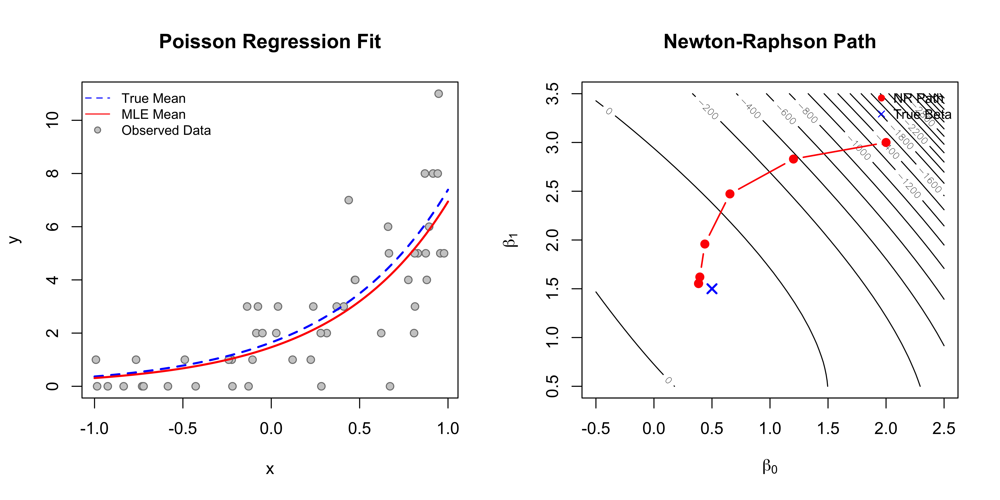

Code
library(latex2exp)
# 1. Data Generation
set.seed(42)
n <- 50
beta_true <- c(0.5, 1.5)
x_vals <- runif(n, -1, 1)
X_mat <- cbind(1, x_vals)
y_obs <- rpois(n, lambda = exp(X_mat %*% beta_true))
# 2. Log-Likelihood Function for Contours
log_lik <- function(b0, b1) {
eta <- b0 + b1 * x_vals
sum(y_obs * eta - exp(eta))
}
# 3. Newton-Raphson Implementation
b_curr <- c(2, 3) # Initial guess
path <- matrix(NA, nrow = 10, ncol = 2)
path[1, ] <- b_curr
for (t in 2:10) {
lambda <- as.vector(exp(X_mat %*% b_curr))
W <- diag(lambda)
U <- t(X_mat) %*% (y_obs - lambda)
J <- t(X_mat) %*% W %*% X_mat
b_new <- b_curr + solve(J) %*% U
path[t, ] <- b_new
b_curr <- b_new
}
path <- na.omit(path)
beta_mle <- path[nrow(path), ]
# --- Plotting Side-by-Side ---
par(mfrow = c(1, 2))
# Plot B: Data and Fitted Curves
plot(x_vals, y_obs, pch = 21, bg = "gray80", col = "gray50",
xlab = "x", ylab = "y", main = "Poisson Regression Fit")
# Generate smooth lines for lambda
x_smooth <- seq(-1, 1, length.out = 100)
lambda_true <- exp(beta_true[1] + beta_true[2] * x_smooth)
lambda_mle <- exp(beta_mle[1] + beta_mle[2] * x_smooth)
lines(x_smooth, lambda_true, col = "blue", lwd = 2, lty = 2)
lines(x_smooth, lambda_mle, col = "red", lwd = 2)
legend("topleft", legend = c("True Mean", "MLE Mean", "Observed Data"),
col = c("blue", "red", "gray50"), lty = c(2, 1, NA),
pch = c(NA, NA, 21), pt.bg = "gray80", bty = "n", cex = 0.8)
# Plot A: NR Optimization Path
b0_grid <- seq(-0.5, 2.5, length.out = 50)
b1_grid <- seq(0.5, 3.5, length.out = 50)
z_vals <- outer(b0_grid, b1_grid, Vectorize(log_lik))
contour(b0_grid, b1_grid, z_vals, nlevels = 20,
xlab = TeX("$\\beta_0$"), ylab = TeX("$\\beta_1$"),
main = "Newton-Raphson Path")
lines(path[,1], path[,2], type = "b", col = "red", pch = 19, lwd = 1.5)
points(beta_true[1], beta_true[2], col = "blue", pch = 4, lwd = 2, cex = 1.2)
legend("bottomright", legend = c("NR Path", "True Beta"),
col = c("red", "blue"), pch = c(19, 4), bty = "n", cex = 0.8)